Arbeidskirke, bygget 1990, i tegl, halvsirkelformet. Allsidig arbeidskirke. 500 sitteplasser.
Arkitekt: Arild Lauvland
Utsmykking: Kari Chritiansen
Foto: Torvald Slettebø, Universitetet i Agder, Seniorsenteret
Tekster: Normann Liene
Voie ble skilt ut som egen sognemenighet fra Vågsbygd 1. januar 1978. Men som en forløper for dette var Voie blitt eget kirkebokføringsdistrikt fra 1. januar 1973. Tanken om en egen menighet og kirke i Ytre Vågsbygd var da allerede 2-3 år gammel. Kirkeforeningen ble stiftet 18. februar 1972 og en av kirkeforeningens første oppgaver var å finne en passende tomt.
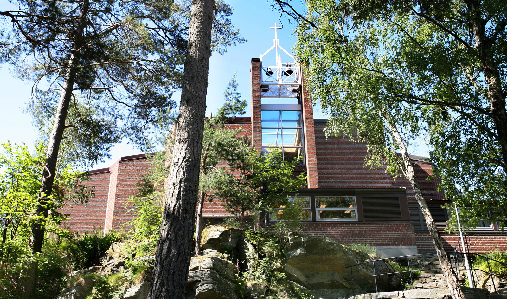Voie kirke var opprinnelig tiltenkt plass ved Buvannet. Men i og med at utbyggingen av Voiebyen stoppet opp i begynnelsen av 1970-årene, ble denne tomta perifer i forhold til bebyggelsen. Det ble derfor i begynnelsen av 1976 foreslått kirketomt i krysset ved Krooddveien og Skonnertveien. Men dette møtte motstand fra jordbruksinteresser. I denne fasen da reguleringsmyndighetene ikke kunne legge fram brukbare tomter, kom ideen fra kommunalt hold om kombinert kirke og tilfluktsrom. I perioden 1976 - 1978 ble ”Fjellkirkeprosjektet” utredet med tanke på plassering av kirka i Sandvigsheia. Men på menighetsmøtet i juni 1978 ble planene utsatt da nye tomtealternativer plutselig dukket opp. På menighetsmøtet i april 1979 ble den nye tomta ved Blandetjønna nesten enstemmig tilrådd og ”Fjellkirkeprosjektet” ble lagt til side. I juni 1980 vedtok et enstemmig bystyre at Voie kirke skulle ligge ved Blandetjønna. På bakgrunn av kommunens svake økonomi påtok Voie menighet seg ansvaret for finansiering og bygging av første byggetrinnet av sognekirka. Kommunen forpliktet seg til senere å fullføre bygget slik at menigheten skulle få ei fullverdig sognekirke. I januar 1982 kunne byggekomitéen og Styret for Voie kirke legge fram anbudene på menighetsmøte for endelig godkjenning. Arkitekt var Arild Lauvland. Utpå ettervinteren startet arbeidet opp for fullt og den 8. mai 1982 kunne biskop Erling Utnem legge ned grunnsteinen. Etter en intens tid med dugnad sto første byggetrinn ferdig og ble vigslet 12. desember 1982. Fullføringen av kirkeprosjektet ble en utholdenshetsetappe og kamp om sparsomme kommunale midler. Men på høsten 1985 ble det oppnevnt en plan- og byggekomité og to år senere godkjente formannskapet ei sognekirke med 600 sitteplasser og en økonomisk ramme på 7,9 millioner kroner. Noen måneder senere - i mars 1988 - godkjente menighetsmøtet forprosjektet som imidlertid ble strøket i finansrådmannens forslag til langtidsbudsjett i november samme året. Menigheten mobiliserte og aksjonerte overfor politikerne, og bystyret førte tilslutt opp 7,5 millioner kroner til Voie kirke med stemmetallene 40 mot 37. I slutten av mars 1989 godtok bystyret anbudet og bevilget pengene. Byggearbeidene startet umiddelbart og den 10. juni 1990 ble Voie kirke vigslet av biskop Halvor Bergan.
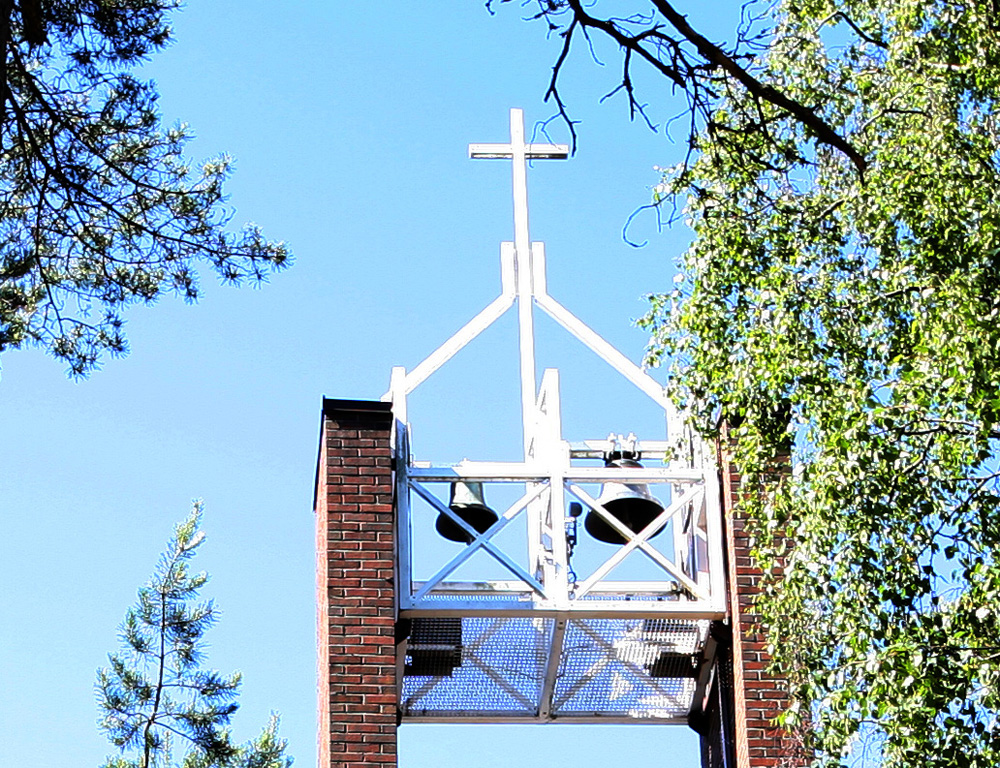De første årene hadde kirka et frittstående klokketårn og kirkeklokka var lånt fra Kystverket. Det var en klokke som hadde hengt i en bøye i sjøen for å varsle sjøfarende om farlige skjær. Ved ringing måtte kirketjeneren ved muskelkraft få sving på klokka.Ved fullførelsen av andre byggetrinn, så fikk kirka eget klokketårn med to klokker som betjenes med elektrisk motor. Disse var støpt ved Nauens Klokkestøperi i Vestfold.
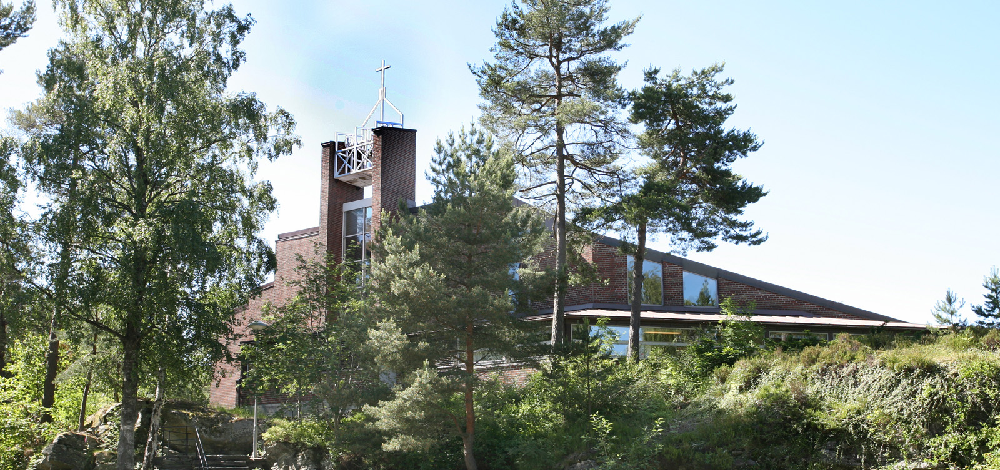Kirka ligger vakkert til på et høydedrag mellom de to Blandetjønnene. Tomta er omkranset av friareal på alle sider. Det var et ønske både å markere kirkebygget i naturen og underordne seg landskapet. Kirka er plassert mellom to koller på tomta, og de skrå takflatene følger opp terrengfallet og samler seg i korparti med klokketårn. Første byggetrinn med kontorfløyen er til høyre. Når den planlagte kirkegården er ferdig, vil den venstre delen bli påbygd med kontorer og bårerom.
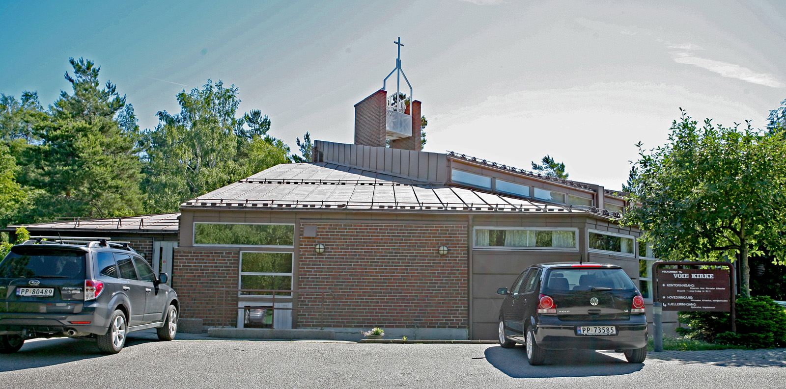 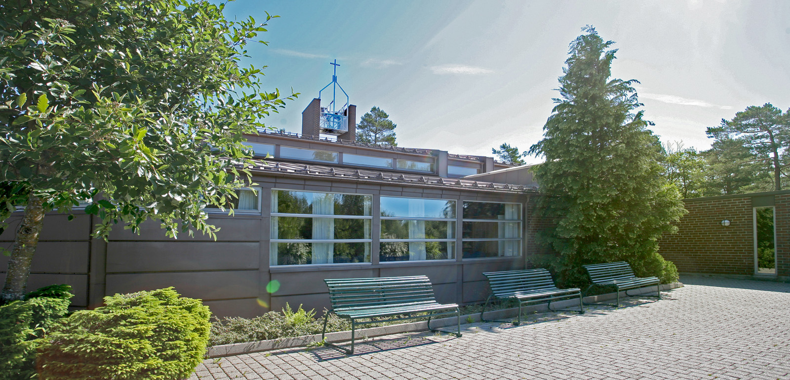I Voie kirke er prekestolen en ”koloss” av murstein - eller teglstein som vi sier for at det skal lyde noe penere. Prekestolen er et barn av sin tid. Da Voie kirke ble bygd, var det tegl og tre som var ”in”. Når vi er til stede på gudstjenesten, så er vi vant til å høre at presten holder sin tale fra prekestolen. Slik har det imidlertid ikke alltid vært. I den eldste tiden var det vanligvis biskopen som holdt prekenen fra en stol bak alteret. I tillegg var det lesepult hvor en geistlig leste evangeliet. I Voie kirke kan vi vel ikke si at prekestolen er et stort kunstverk. Men det er noe som er viktigere – nemlig det budskapet som presten forkynner fra prekestolen.
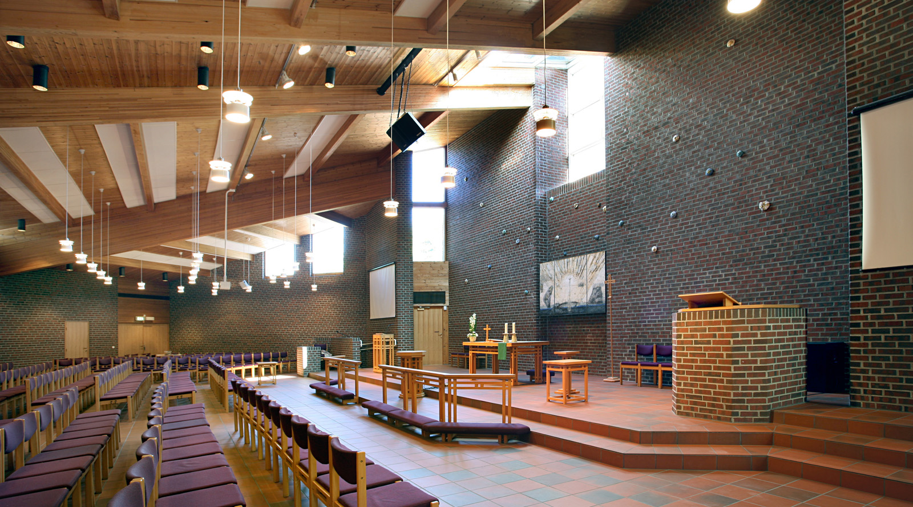 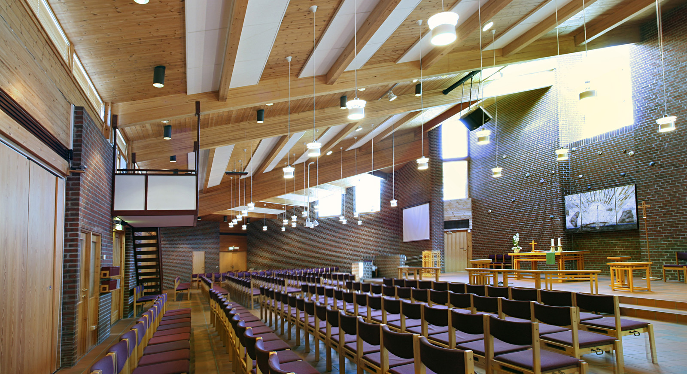Kirkerommet er oppført med teglstein og tre som hovedmaterialer. Disse er valgt med tanke på vedlikehold og ut fra ønsket om at materialene skal fremstå med sin egen materialkvalitet. Stolene er laget på Tovslid Trevarefabrikk i Fyresdal. Disse ble for øvrig byttet ut med nye stoler fra samme fabrikken høsten 2009.
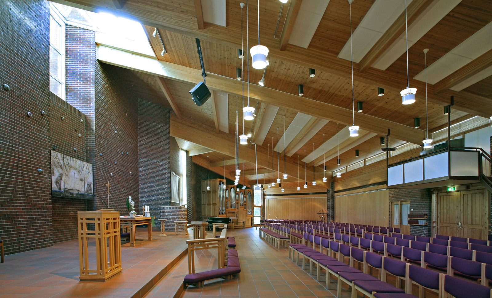 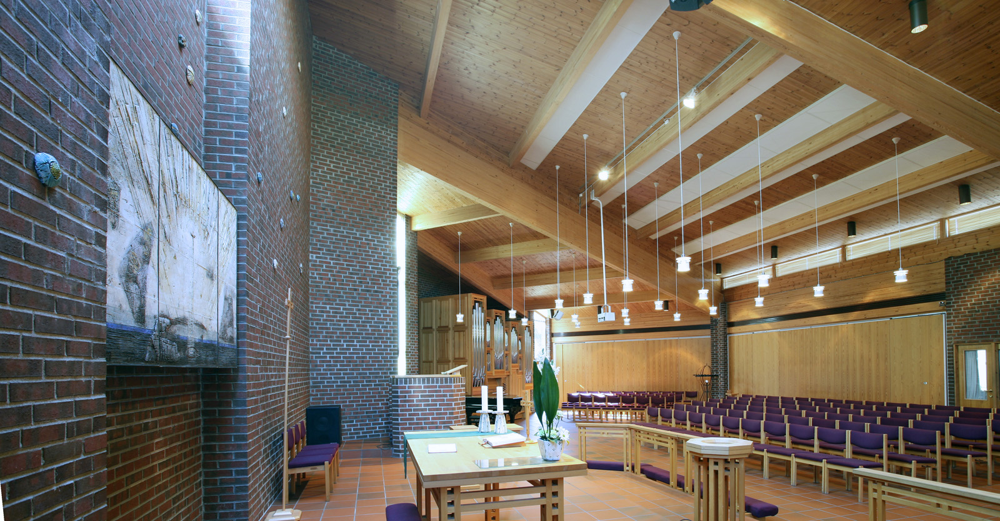Voie kirke har et utradisjonelt kirkerom – i og med at rommet er bredere enn lengden. Det danner en halvsirkel med alterpartiet i sentrum. Kirkerommets podium samler interiøret og gjør handlinger og opptreden lett synlig fra hele kirkerommet. Tilgjengelighet er ivaretatt ved rampe og ved at alterringen kan settes opp langs første podium slik som på bildet. På slutten av 1400-tallet begynte man å bygge prekestoler. Til å begynne med var de transportable og kunne flyttes rundt i kirka etter behov. Men etter hvert gikk man over til faste prekestoler. Reformasjonen i 1537 førte med seg en mer nøktern kirkeinnredning. Forkynnelsen fikk en mer sentral plass i gudstjenesten og prekestolen ble en viktig del av inventaret. Utover på 1600-tallet kom barokken til Norge og gav oss noe av det vakreste vi har av kirkekunst. Vi kan jo tenke på prekestolen i Oddernes kirke som ble satt opp i 1704. Den er rikt utskåret og malt i kraftige farger med ornamentikk i gull. Ved sokkelen står Moses med steintavlene i hendene, samtidig som han ”bærer” prekestolen. Det meste av arbeidet ble utført av snekkere som var rene kunstnere i sitt fag. Mange av disse var utlendinger. På 1600-tallet kom mange hollandske handelsskip til Agder for å kjøpe trelast. Disse brakte med seg blant annet mye fin kirkekunst som ble solgt til norske kirker. Mange dyktige håndverkere både fra Nederland og Tyskland innvandret til vårt land og slo seg ned her. Disse dannet en skole for norske snekkere.
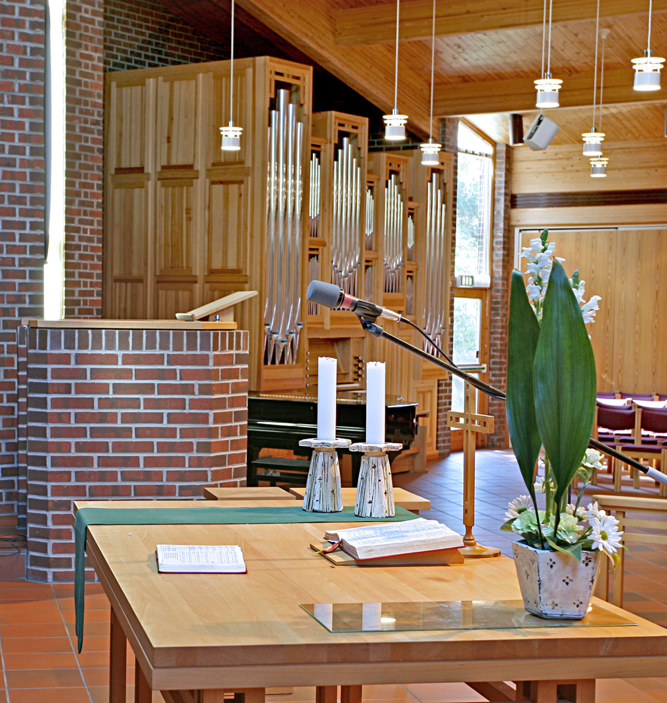 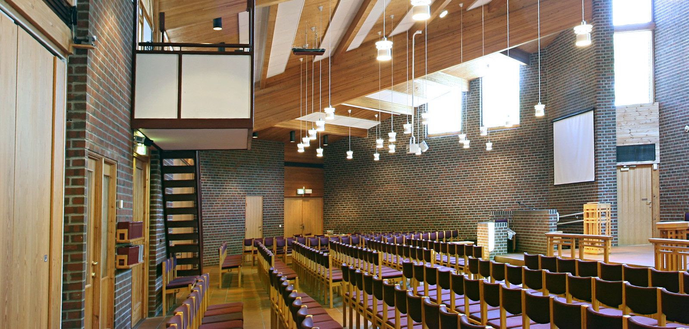Øverst til venstre ser vi plattformen som brukes av teknisk personale. Herfra styres all lyd. Omtrent midt i bildet sees en prosjektør som gjør det mulig å få tekst og bilder på lerretet til høyre.
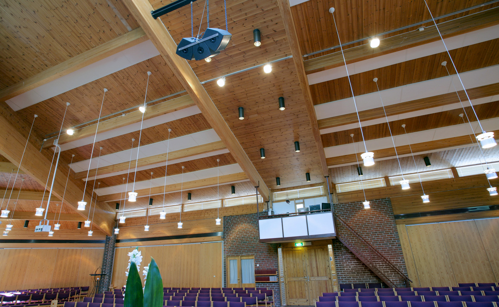I kirkerommet dekkes kunstig belysning av glødelampe-pendler. For øvrig anvendes taklamper, glødelamper i forrom og møterom, samt lysstoffarmatur i kontorer og birom.
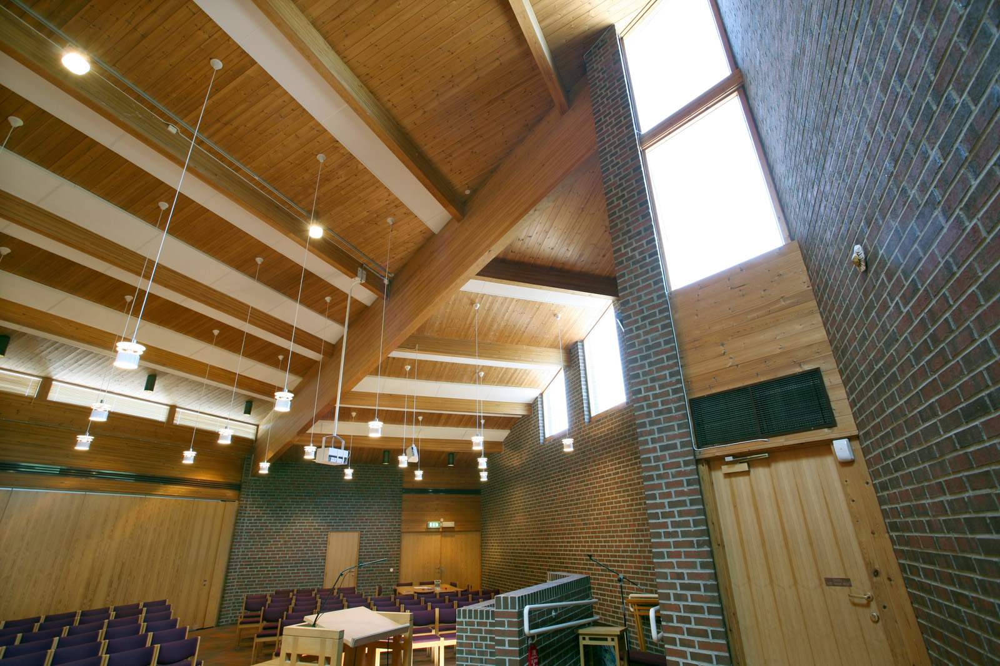Dette bilde viser interiøret i første byggetrinn. I nedre billedkant ser vi klokkerstolen, samt rullestolsrampen som fører opp på podiet. I høyre billedkant er døren ut til kontoravdelingen.
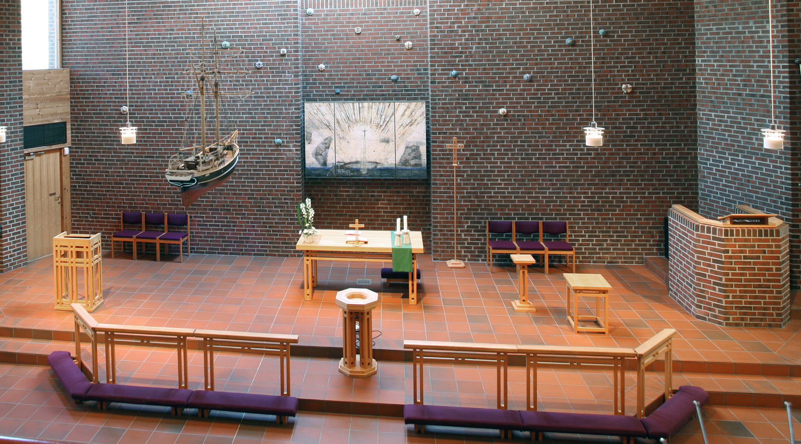Skikken med skutemodeller i kirkene begynte i Norge på 1600-tallet. Det var gjerne til minne om tragiske forlis og var som regel en gave fra de etterlatte. Dette gjaldt jo helst kystdistriktene, men det ble også hengt opp skutemodeller i kirker innover i landet. Her var den symbolske betydningen dominerende, nemlig fortstillingen om livet som en seilas mot evigheten. Men skipet ble også brukt som symbol på kirken på vei mot sitt himmelske mål. Skuta henger under taket med stavnen mot alteret og viser kursen som menigheten seiler – mot den oppadgående sol hvorfra Jesus skal vise seg igjen. Kirken er et fellesskap hvor passasjerer og besetning stevner mot målet – selve himmelhavnen. Det finnes over 300 kirkeskip i Norge og det eldste henger i Mariakirken i Bergen.
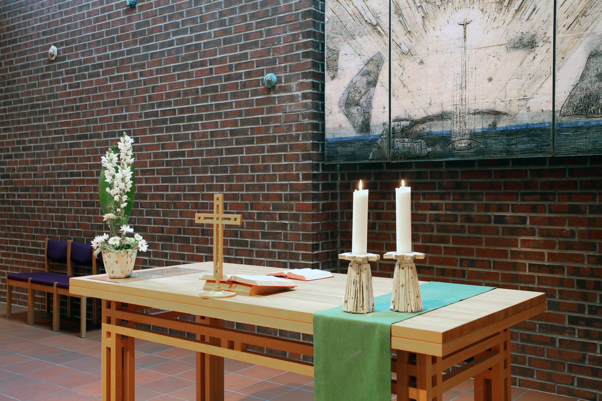Både lysestaker, blomsterpotte og alterkalk er laget i keramikk av den lokale keramikeren på Møvig – Ingunn Fjelde Sandvikmoen.
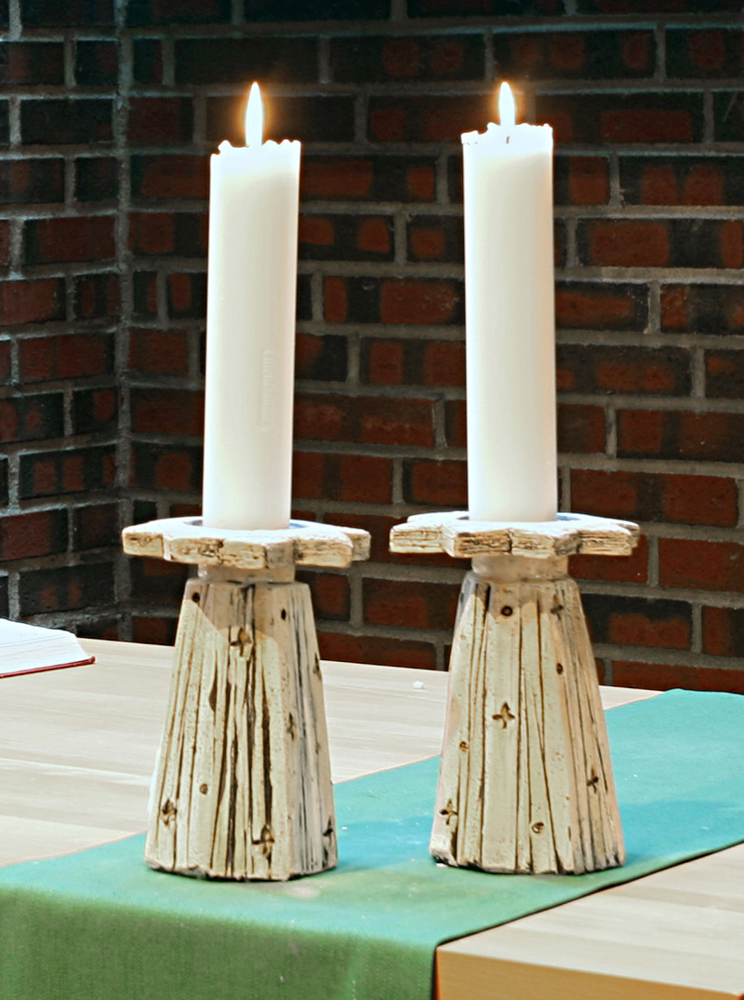 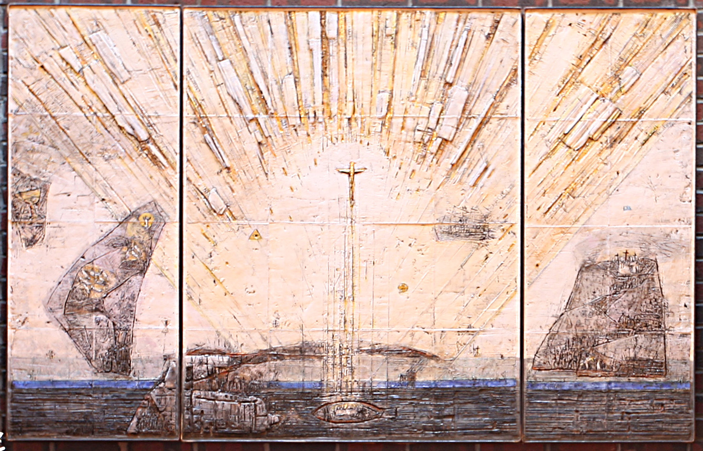Voie kirke fikk sin altertavle 21. august 1994. Det var den internasjonalt kjente keramikeren Kari Christensen fra Vågsbygda som laget utsmykkingen. Det er et alterrelieff i tre deler som måler ca. 2,10 meter x 1,50 meter. Videre er det en stjernehimmel som brer seg utover fondveggen. Hun kalte utsmykkingen ”Mot lyset” og den skal uttrykke glede og håp. Det midterste feltet i altertavla er oppstigning der det guddommelige lys stråler ut fra en fugl som har korsets tegn. Sammen med sidedelene som er Getsemane og Golgata kan det tolkes som den oppadstigende Kristus. Ellers er bildet fullt av symboler og små detaljer som bygger opp om helheten og hovedmotivet som er oppstandelsen. Hoveddelen har en tredelt form, ”treptrikon”, som er plassert slik at det får kontakt med det som foregår ved alteret. Selve formatet er laget over ”det gyldne snitt” som er en av de mest harmoniske proporsjoner. For å ta med fondveggen og sideveggene i utsmykkingen, har kunstneren laget en stjernehimmel som glimter i farger og gull mot den mørke bakgrunnen.
I Voie kirke har vi en enkelt døpefont av tre. Den ble laget ved Rolands Snekkerverksted da andre byggetrinn av kirka sto ferdig. I den eldste kristne tida ble det ikke brukt døpefont. Dåpen foregikk ved at hele kroppen ble dukket under i vann. Men på kirkemøtet i Leda i 594 ble det vedtatt at hver kirke skulle ha en døpefont av stein. De tidligste døpefontene hadde en dyp kum hvor barnet ble dukket helt under. Men på midten av 1400-tallet gikk man over til å bare helle vann over hodet til barnet. Da ble døpefontene laget grunnere og man fikk dåpsfatet. Det var gjerne av tinn eller messing. I våre dager er dåpsfatet helst av edelt metall, vanligvis sølv eller sølvplett med inskripsjoner og kristne symboler. Da Norge ble kristnet, var dåpsritualet for lengst fastlagt. Dåpen skulle foretaes 1-3 dager etter fødselen, og først i 1687 ble fristen forlenget til 8 dager. Denne fristen ble praktisert til langt utpå 1800-tallet. Vi kan jo bare tenke oss hvordan det var å ta et nyfødt barn ut i kulda og inn i en uoppvarmet kirke vinterstid. Til å begynne med sto døpefonten i nærheten av inngangsdøra ved vestveggen i kirka. Dåpsritualet var ”porten” til det kristne liv. Det var derfor naturlig å plassere døpefonten ved inngangen. Denne skikken holdt seg også til utpå 1800-tallet. Barnets mor måtte holde seg hjemme til barnet var døpt. Kvinnene ble betraktet som urene etter fødselen. De måtte ikke gå i fjøset eller la mannen komme inn til seg før de var blitt renset. Denne oppfatningen om at kvinnen var uren kan føres tilbake til den jødiske oppfatning slik den kommer til uttrykk i 3. Mosebok. Men vi finner også i Lukas 2 at Maria, Jesu mor, gikk i tempelet for å la seg rense etter at hun hadde født. Seremonien med en renselse av barselkvinnen gikk over i den katolske kirken og ble så senere tatt opp i den lutherske. Selve renselsesprosessen foregikk vanligvis på den måten at kvinnen måtte holde seg utenfor kirkedøren inntil presten hadde velsignet henne og bedt for henne. Deretter tok han henne i hånden, eller gikk foran henne og førte henne inn i Guds hus. Mange steder hadde de barnedåp og innledelse samtidig. Denne skikken går tilbake til middelalderen. I Oddernes kirke foregikk ordningen med innledelse helt fram til omkring 1860.
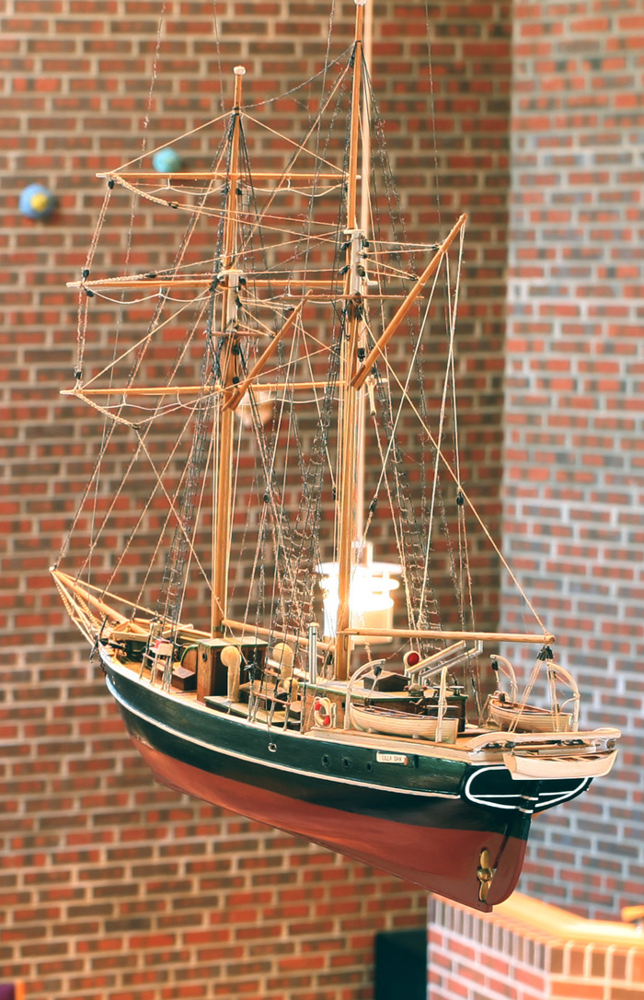Kirkeskipet i Voie kirke er ikke noen prangende fullrigger – men en skonnert. Kanskje den mest vanlige skutetypen som gikk i fart på de nære farvann – i lokalmiljøet. Slike skonnerter har det ligget mange av i havna på Møvig helt opp til andre verdenskrig. Voie menighet besto opprinnelig av de tre gamle gårdene i Ytre Vågsbygda – nemlig Møvig, Brøvig og Voie. Senere er jo også deler av Kjos også innlemmet i menigheten. Selve kirka ligger nøyaktig på grensa mellom Møvig og Brøvig, mens den bærer Voie’s navn. Veiene i Voiebyen har som vi vet navn fra det maritime miljøet. Den eneste av disse veiene som binder sammen alle tre gårdene er – Skonnertveien. Skuta i Voie kirke har også propell som viser at den ikke alltid behøver å seile med vinden. Ved hjelp av motoren kan skuta/menigheten komme nærmere målet selv og det blåser motvind. Skuta er laget av Normann Liene.
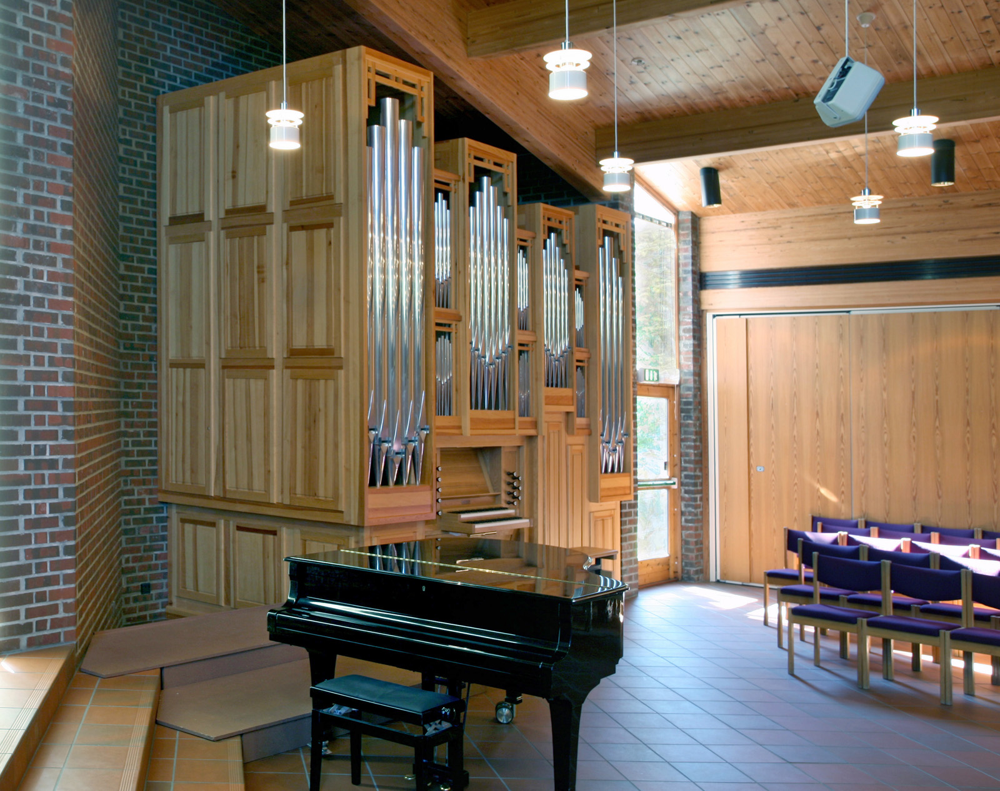De første årene etter at kirka sto ferdig ble salmesangen ledsaget av et flygel og et elektronisk orgel. Flygelet var et Yamaha-instrument som ble kjøpt fra musikeren Arne Stakkeland. Det nye orgelet ble bestilt i februar 2002 hos Venheim orgelbyggeri i Skien. Den 19. august 2003 sto orgelet ferdig i kirka – stemt og intonert. Orgelet har 15 registre med ca. 1000 piper til sammen, fra den minste på ca. 1 cm, til de største på over 2,5 meter. Orgelet ble finansiert ved at Fellesrådet/kommunen bevilget 1.541.000 kroner. Resten – omkring 357.000 kroner har menigheten selv samlet inn. I 2009 kunne vi lese i Orgelselskapets medlemsblad – Orgelspeilet - at orgelet i Voie kirke var et utrolig fleksibelt orgel med både kammermusikalske egenskaper og et fulltonende pleno, samt stor dynamisk spennvidde. Videre var den håndverksmessig utførelse av første klasse.
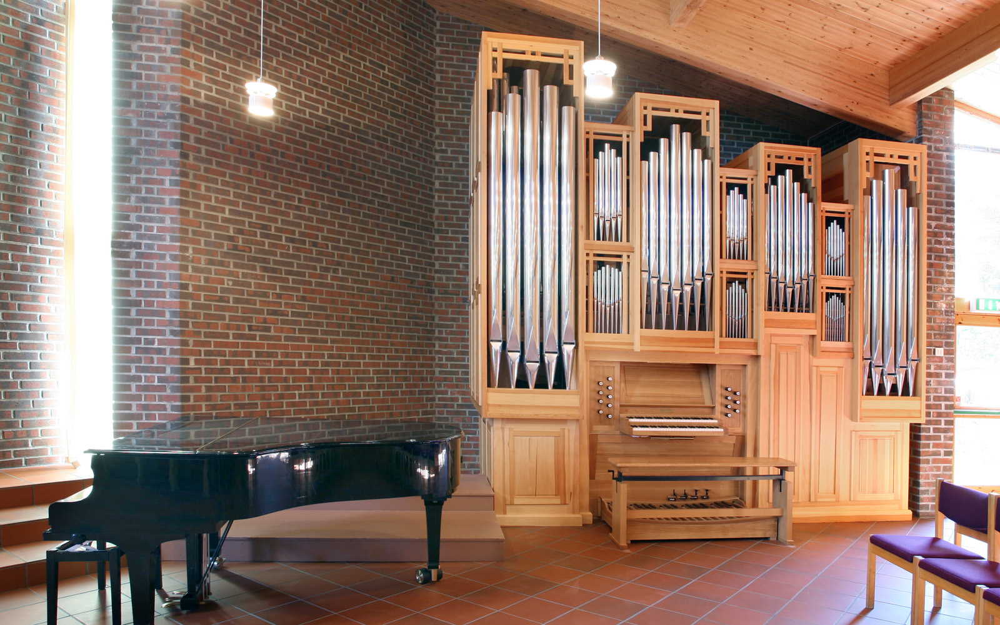